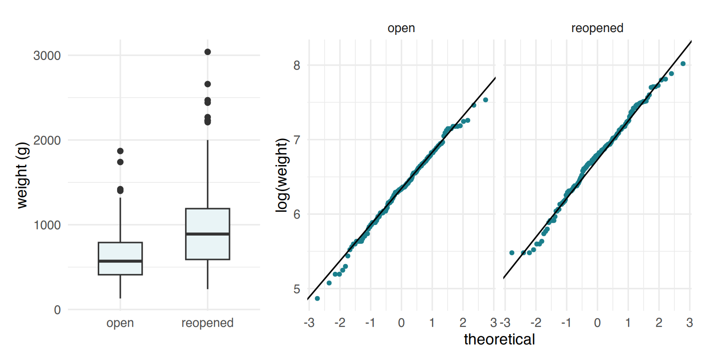
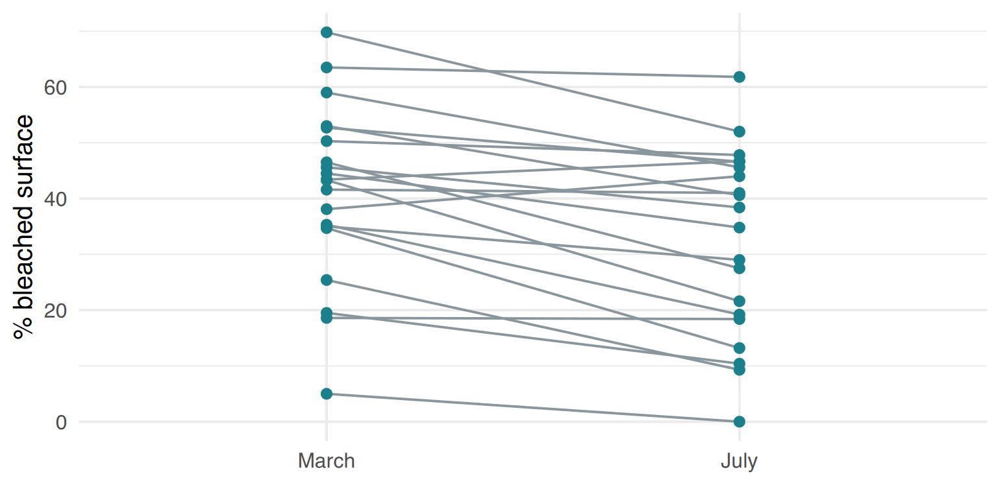

Data: octopus_catch.csv (Session 3).
185 octopuses landed from the reopened area (Tsifota)
and 160 from open areas (Andrevo), on the same day.
Each octopus is one independent observation; the two groups contain
different octopuses → independent
groups.
Données : octopus_catch.csv (séance 3).
185 pieuvres débarquées de la zone rouverte (Tsifota)
et 160 des zones ouvertes (Andrevo), le même jour.
Chaque pieuvre est une observation indépendante ; les deux groupes
contiennent des pieuvres différentes → groupes
indépendants.
Plot first (Session 3), then check the assumptions of the t-test:
Tracez d’abord (séance 3), puis vérifiez les conditions du test t :
library(patchwork)
p1 <- ggplot(oc, aes(area, weight_g)) + geom_boxplot(width = 0.5, fill = "#e9f4f6") + labs(x = NULL, y = "weight (g)") + theme_c(11)
p2 <- ggplot(oc, aes(sample = log(weight_g))) + stat_qq(colour = "#1b7f8c", size = 1) + stat_qq_line() +
facet_wrap(~ area) + labs(x = "theoretical", y = "log(weight)") + theme_c(11)
p1 + p2 + plot_layout(widths = c(1, 2))
oc %>% group_by(area) %>% summarise(n = n(), mean = mean(weight_g), sd = sd(weight_g), median = median(weight_g))#> # A tibble: 2 × 5
#> area n mean sd median
#> <chr> <int> <dbl> <dbl> <dbl>
#> 1 open 160 631. 316. 570
#> 2 reopened 185 980. 511. 890Functions and arguments used here
| Function / argument | What it does | Value it expects |
|---|---|---|
plot_layout(widths) |
(patchwork) relative widths of the plots placed side by side | a numeric vector |
Fonctions et arguments utilisés ici
| Fonction / argument | Ce qu’il fait | Valeur attendue |
|---|---|---|
plot_layout(widths) |
(patchwork) largeurs relatives des graphiques placés côte à côte | un vecteur numérique |
Weights are right-skewed in both areas; their logs are close to normal. Two valid options — decide before testing, do not run both and keep the “best” p-value:
Les poids sont asymétriques à droite dans les deux zones ; leurs logs sont proches de la normale. Deux options valides — décidez avant de tester, ne faites pas les deux pour garder la « meilleure » p-value :
#>
#> Welch Two Sample t-test
#>
#> data: weight_g by area
#> t = -7.7425, df = 311.84, p-value = 1.373e-13
#> alternative hypothesis: true difference in means between group open and group reopened is not equal to 0
#> 95 percent confidence interval:
#> -438.0729 -260.5352
#> sample estimates:
#> mean in group open mean in group reopened
#> 630.7500 980.0541Functions and arguments used here
| Function / argument | What it does | Value it expects |
|---|---|---|
t.test(formula, data, var.equal, paired) |
two-sample t-test | |
formula |
numeric ~ group; the group must have exactly 2
values |
column names |
var.equal |
FALSE (default) = Welch test; TRUE =
classic Student test with pooled variance |
TRUE / FALSE |
Fonctions et arguments utilisés ici
| Fonction / argument | Ce qu’il fait | Valeur attendue |
|---|---|---|
t.test(formula, data, var.equal, paired) |
test t à deux échantillons | |
formula |
numérique ~ groupe ; le groupe doit avoir exactement 2
valeurs |
noms de colonnes |
var.equal |
FALSE (défaut) = test de Welch ; TRUE =
test de Student classique avec variance commune |
TRUE / FALSE |
Reading the output. mean in group open
and mean in group reopened: the two means. The
difference is computed as first group − second
group, in the alphabetical order of the levels
(open − reopened), hence a negative CI. To get
reopened − open, make area a factor with
levels = c("reopened", "open"). df has
decimals: the Welch correction.
Lecture de la sortie.
mean in group open et mean in group reopened :
les deux moyennes. La différence est calculée
premier groupe − second groupe, dans l’ordre
alphabétique des niveaux (open − reopened),
d’où un IC négatif. Pour obtenir rouverte − ouverte, faites de
area un facteur avec
levels = c("reopened", "open"). df a des
décimales : la correction de Welch.
oc$area <- factor(oc$area, levels = c("reopened", "open"))
tA <- t.test(weight_g ~ area, data = oc)
round(c(diff = diff(rev(tA$estimate)), lower = tA$conf.int[1], upper = tA$conf.int[2]), 1)#> diff.mean in group reopened lower upper
#> 349.3 260.5 438.1tB <- t.test(log(weight_g) ~ area, data = oc)
ratio <- exp(diff(rev(tB$estimate))) # ratio of geometric means reopened / open
round(c(ratio = ratio, lower = exp(tB$conf.int[1]), upper = exp(tB$conf.int[2])), 2)#> ratio.mean in group reopened lower upper
#> 1.54 1.38 1.71#> [1] 8.812121e-14Option B in words: octopuses from the reopened area were 1.54 times heavier (geometric means; 95 % CI 1.38–1.71), i.e. about 54 % heavier.
L’option B en mots : les pieuvres de la zone rouverte étaient 1.54 fois plus lourdes (moyennes géométriques ; IC 95 % 1.38–1.71), soit environ 54 % plus lourdes.
d = (difference of means) / (pooled SD). It has no unit, so it lets you compare effects across studies and is needed for power calculations (Session 11).
d = (différence des moyennes) / (ET commun). Il est sans unité, il permet donc de comparer des effets entre études, et il est nécessaire pour les calculs de puissance (séance 11).
x1 <- oc$weight_g[oc$area == "reopened"]; x2 <- oc$weight_g[oc$area == "open"]
sd_pooled <- sqrt(((length(x1) - 1) * var(x1) + (length(x2) - 1) * var(x2)) / (length(x1) + length(x2) - 2))
d <- (mean(x1) - mean(x2)) / sd_pooled
round(d, 2)#> [1] 0.81When groups are small and clearly skewed, or have strong outliers, and a log does not help, use the Wilcoxon rank-sum test (also called Mann–Whitney U). It replaces values by their ranks in the pooled data and asks whether one group tends to have higher ranks. It does not assume normality, but it tests a slightly different question: whether values of one group tend to be larger (a “shift”), not whether the means differ.
Quand les groupes sont petits et nettement asymétriques, ou ont de fortes valeurs extrêmes, et qu’un log n’aide pas, utilisez le test de Wilcoxon des rangs (aussi appelé U de Mann–Whitney). Il remplace les valeurs par leurs rangs dans l’ensemble des données et demande si un groupe tend à avoir des rangs plus élevés. Il ne suppose pas la normalité, mais il teste une question un peu différente : si les valeurs d’un groupe tendent à être plus grandes (un « décalage »), pas si les moyennes diffèrent.
#>
#> Wilcoxon rank sum test with continuity correction
#>
#> data: weight_g by area
#> W = 21494, p-value = 4.297e-13
#> alternative hypothesis: true location shift is not equal to 0
#> 95 percent confidence interval:
#> 220 380
#> sample estimates:
#> difference in location
#> 300Functions and arguments used here
| Function / argument | What it does | Value it expects |
|---|---|---|
wilcox.test(formula, data, paired, conf.int, exact) |
Wilcoxon rank-sum test (2 independent groups) or signed-rank test
(paired = TRUE) |
|
conf.int |
TRUE adds an estimate of the shift between groups
(Hodges–Lehmann) and its CI |
TRUE / FALSE |
exact |
exact p-value (small samples, no ties) or normal approximation; with ties R warns and uses the approximation — that is fine | TRUE / FALSE / NULL |
Fonctions et arguments utilisés ici
| Fonction / argument | Ce qu’il fait | Valeur attendue |
|---|---|---|
wilcox.test(formula, data, paired, conf.int, exact) |
test de Wilcoxon des rangs (2 groupes indépendants) ou des rangs
signés (paired = TRUE) |
|
conf.int |
TRUE ajoute une estimation du décalage entre groupes
(Hodges–Lehmann) et son IC |
TRUE / FALSE |
exact |
p-value exacte (petits échantillons, sans ex æquo) ou approximation normale ; avec des ex æquo R avertit et utilise l’approximation — c’est normal | TRUE / FALSE / NULL |
W is the rank statistic. The message “cannot compute
exact p-value with ties” appears because several octopuses have the same
weight (rounded to 10 g): R then uses an approximation, which is
fine.
W est la statistique des rangs. Le message « cannot
compute exact p-value with ties » apparaît parce que plusieurs pieuvres
ont le même poids (arrondi à 10 g) : R utilise alors une approximation,
ce qui est correct.
Tagged corals
(coral_tagged_colonies.csv, simulated). 20 coral
colonies of four genera were tagged with numbered plates on one
reef. Each was photographed from above in March 2026
(peak of a marine heatwave) and again in July 2026; the
% of bleached surface was measured on the photos. One row = one
colony, measured twice. Question: did bleaching decrease between
March and July?
Coraux marqués
(coral_tagged_colonies.csv, simulé). 20 colonies
coralliennes de quatre genres ont été marquées avec des plaques
numérotées sur un récif. Chacune a été photographiée du dessus en
mars 2026 (pic d’une vague de chaleur marine) puis en
juillet 2026 ; le % de surface blanchie a été mesuré
sur les photos. Une ligne = une colonie, mesurée deux fois.
Question : le blanchissement a-t-il diminué entre mars et juillet ?
The two measurements of a colony are not independent: a heavily bleached colony in March tends to be more bleached in July too. Colonies differ a lot from each other (5 % to 70 % in March), but we only care about the change within each colony. A paired test analyses the 20 differences (March − July): it is a one-sample t-test of H0: mean difference = 0.
Les deux mesures d’une colonie ne sont pas indépendantes : une colonie très blanchie en mars tend à l’être aussi en juillet. Les colonies diffèrent beaucoup entre elles (5 % à 70 % en mars), mais seule nous intéresse la variation au sein de chaque colonie. Un test apparié analyse les 20 différences (mars − juillet) : c’est un test t à un échantillon de H0 : différence moyenne = 0.
cc <- read.csv("data/coral_tagged_colonies.csv")
cc$diff <- cc$bleached_march - cc$bleached_july
summary(cc$diff)#> Min. 1st Qu. Median Mean 3rd Qu. Max.
#> -5.900 2.300 8.150 8.845 16.100 21.700# a "slope graph": one line per colony
long <- data.frame(colony = rep(cc$colony_id, 2),
month = factor(rep(c("March", "July"), each = 20), levels = c("March", "July")),
bleached = c(cc$bleached_march, cc$bleached_july))
ggplot(long, aes(month, bleached, group = colony)) +
geom_line(colour = "#8a969e") + geom_point(colour = "#1b7f8c", size = 2) +
labs(x = NULL, y = "% bleached surface") + theme_c()
#>
#> Paired t-test
#>
#> data: cc$bleached_march and cc$bleached_july
#> t = 4.8189, df = 19, p-value = 0.0001193
#> alternative hypothesis: true mean difference is not equal to 0
#> 95 percent confidence interval:
#> 5.003274 12.686726
#> sample estimates:
#> mean difference
#> 8.845#> [1] 0.0001192937Functions and arguments used here
| Function / argument | What it does | Value it expects |
|---|---|---|
geom_line(aes(group = colony)) |
joins the points of the same colony: one line per colony | |
t.test(x, y, paired = TRUE) |
paired t-test: tests the mean of the differences x − y
row by row |
two vectors of the same length, same order of units |
Fonctions et arguments utilisés ici
| Fonction / argument | Ce qu’il fait | Valeur attendue |
|---|---|---|
geom_line(aes(group = colony)) |
relie les points d’une même colonie : une ligne par colonie | |
t.test(x, y, paired = TRUE) |
test t apparié : teste la moyenne des différences x − y
ligne par ligne |
deux vecteurs de même longueur, même ordre des unités |
What if we had forgotten the pairing? The between-colony variability is then counted as noise:
Et si nous avions oublié l’appariement ? La variabilité entre colonies est alors comptée comme du bruit :
#> [1] 0.09381913The unpaired test gives a much larger p-value: it loses the information that each colony is its own control. Pairing (or “blocking”) is a powerful design: measure the same units before and after, or compare treatments within the same site.
The rank-based paired alternative is the Wilcoxon signed-rank
test: wilcox.test(x, y, paired = TRUE). Use it
with few pairs and strongly skewed or outlying differences. Check the
differences with a histogram or QQ plot.
Le test non apparié donne une p-value bien plus grande : il perd l’information que chaque colonie est son propre témoin. L’appariement (ou « blocage ») est un plan puissant : mesurer les mêmes unités avant et après, ou comparer des traitements au sein d’un même site.
L’alternative appariée sur les rangs est le test des rangs
signés de Wilcoxon :
wilcox.test(x, y, paired = TRUE). Utilisez-le avec peu de
paires et des différences fortement asymétriques ou avec des valeurs
extrêmes. Vérifiez les différences avec un histogramme ou un QQ
plot.
#>
#> Wilcoxon signed rank exact test
#>
#> data: cc$bleached_march and cc$bleached_july
#> V = 198, p-value = 0.0001335
#> alternative hypothesis: true location shift is not equal to 0| Design | Data roughly normal (or large n) | Small n, skewed / outliers |
|---|---|---|
| 2 independent groups | Welch t-test t.test(y ~ g) (on log(y) if
multiplicative) |
Wilcoxon rank-sum wilcox.test(y ~ g) |
| Paired (same units twice) | paired t-test t.test(x, y, paired = TRUE) |
Wilcoxon signed-rank
wilcox.test(x, y, paired = TRUE) |
| One group vs a reference value | t.test(x, mu = …) |
wilcox.test(x, mu = …) |
Write it like this: “Bleached surface decreased by 8.8 percentage points on average between March and July (95 % CI 5.0–12.7; paired t-test, t = 4.82, df = 19, p < 0.001; n = 20 colonies).”
| Plan | Données à peu près normales (ou grand n) | Petit n, asymétrie / valeurs extrêmes |
|---|---|---|
| 2 groupes indépendants | test t de Welch t.test(y ~ g) (sur log(y) si
multiplicatif) |
Wilcoxon des rangs wilcox.test(y ~ g) |
| Apparié (mêmes unités deux fois) | test t apparié t.test(x, y, paired = TRUE) |
rangs signés de Wilcoxon
wilcox.test(x, y, paired = TRUE) |
| Un groupe vs une valeur de référence | t.test(x, mu = …) |
wilcox.test(x, mu = …) |
Rédigez ainsi : « La surface blanchie a diminué en moyenne de 8,8 points de pourcentage entre mars et juillet (IC 95 % 5,0–12,7 ; test t apparié, t = 4,82, ddl = 19, p < 0,001 ; n = 20 colonies). »
weight_g ~ sex): mean F − mean M (1 decimal) and p-value (4
decimals).exact = FALSE): p-value (4 decimals).log(weight_g) ~ gear). Ratio of
geometric means hook / spear (exp of mean
log hook − mean log spear, 3 decimals) and p-value (4 decimals).weight_g ~ sex) : moyenne F − moyenne M (1 décimale) et
p-value (4 décimales).exact = FALSE) : p-value (4 décimales).log(weight_g) ~ gear). Rapport des moyennes géométriques
hook / spear (exp de moyenne log hook −
moyenne log spear, 3 décimales) et p-value (4 décimales).Q4: in tl <- t.test(log(weight_g) ~ gear, data = oc),
tl$estimate holds the mean log of hook then
spear (alphabetical order). Q6–8:
ac <- cc[cc$genus %in% c("Acropora", "Pocillopora"), ].
Q4 : dans
tl <- t.test(log(weight_g) ~ gear, data = oc),
tl$estimate contient la moyenne des log de
hook puis de spear (ordre alphabétique). Q6–8
:
ac <- cc[cc$genus %in% c("Acropora", "Pocillopora"), ].
oc <- read.csv("data/octopus_catch.csv")
re <- oc[oc$area == "reopened", ]
t.test(weight_g ~ sex, data = re) # 1 (difference of the two means), 2
wilcox.test(weight_g ~ sex, data = re, exact = FALSE) # 3
tl <- t.test(log(weight_g) ~ gear, data = oc)
exp(tl$estimate[1] - tl$estimate[2]); tl$p.value # 4, 5
cc <- read.csv("data/coral_tagged_colonies.csv")
ac <- cc[cc$genus %in% c("Acropora", "Pocillopora"), ]
t.test(ac$bleached_march, ac$bleached_july, paired = TRUE) # 6, 7, 8
# 9: paired (same quadrats) 10: Wilcoxon rank-sum (small n, outlier)